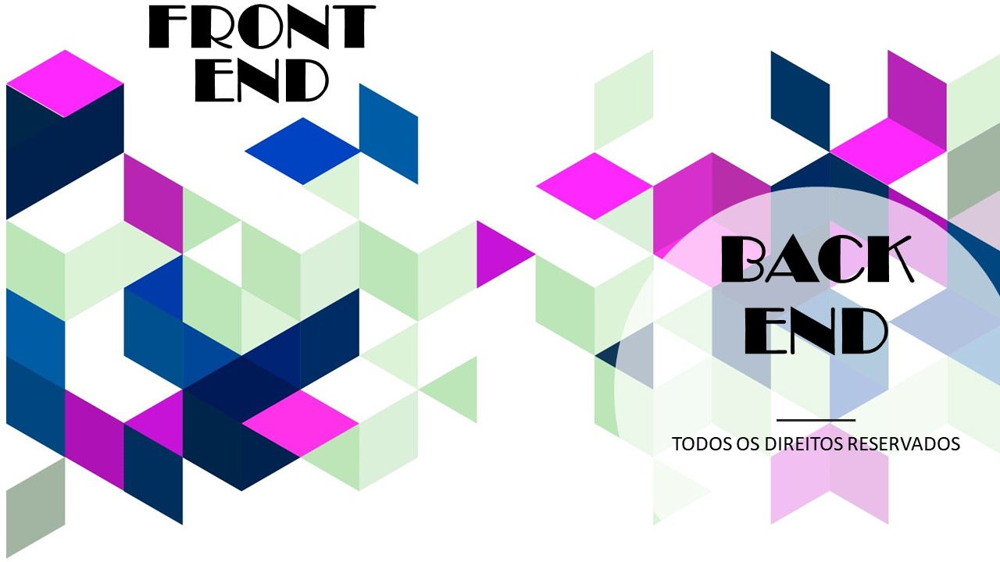

Divisões de hierarquia
postado 20 março 2022 Front-end e back-end são termos usados para caracterizar interfaces de programas e serviços ao usuário dessas interfaces.Front-end O desenvolvedor front-end é responsável por “dar vida” à interface. Trabalha com a parte da aplicação que interage diretamente com o usuário. Por isso, é importante que esse desenvolvedor também se preocupe com a experiência do usuário. Na parte de estudo, este profissional foca em HTML (linguagem de marcação), CSS (linguagem de estilo) e JavaScript (linguagem de script/programação).
Leia maisTitulo da postagem 2
postado 10 março 2022
Back-end Como o nome sugere, o desenvolvedor back-end trabalha na parte de “trás” da aplicação. Ele é o responsável, em termos gerais, pela implementação da regra de negócio. Em uma aplicação web, este desenvolvedor, quando focado, não toca na parte visual da aplicação. Por lidar com a regra de negócio, as vezes um programador de sistemas, como de aplicações comerciais e até científicas, pode ser chamado de desenvolvedor back-end. E geralmente, nessas aplicações, este desenvolvedor trabalha um pouco com a parte visual. Por isso, para este artigo, o desenvolvedor back-end levado em conta, é o desenvolvedor de aplicações web. Quando falamos de back-end em desenvolvimento web, nos deparamos com várias linguagens, como Go, Clojure, C#, PHP, Java, Python, Ruby, entre outras. Cada uma possui vantagens e desvantagens em relação ao uso no desenvolvimento web, bem como no mercado de trabalho.
Leia mais